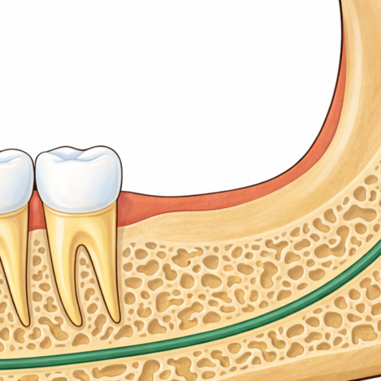
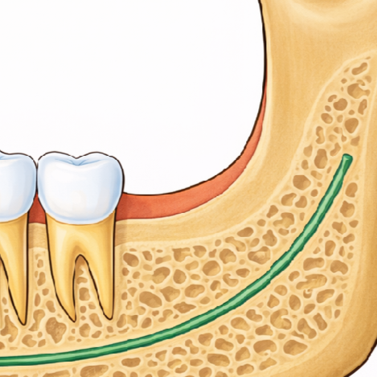
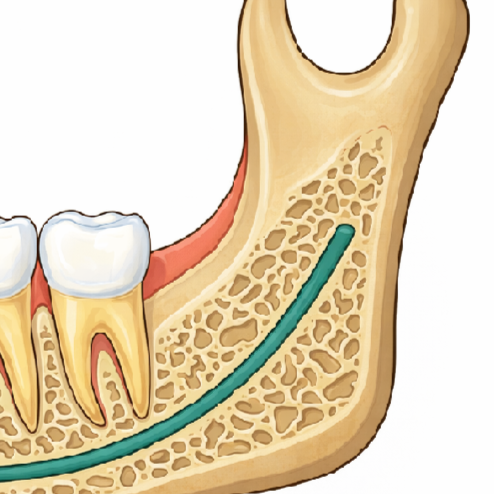
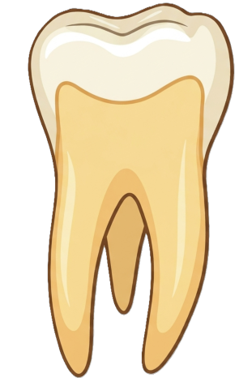

전북대병원 · 구강악안면외과
오프닝
매복 분류
발치 시기
마취·통증
특수 환자
합병증
회복
매복 사랑니 분류 — 인터랙티브
Winter 분류 × Pell-Gregory 분류 | 실제 해부학 이미지 기반
🦷 버튼을 눌러 조합하세요




A
B
C
Winter 분류 — 경사 방향
치관의 기울기
↑ 수직 (Vertical)
~38%
↖ 근심경사 (Mesioangular)
~43% 최다
← 수평 (Horizontal)
~3–12%
↗ 원심경사 (Distoangular)
~6–9%
Pell-Gregory — 하악지 공간
사랑니와 하악지(Ramus) 위치 관계
Class I
공간 충분
Class II
공간 부분
Class III
하악지 매복
Pell-Gregory — 매복 깊이
M3 최고점의 수직 위치
Depth A
교합면 이상
Depth B
교합↔치경
Depth C
치경선 이하
⚙️ 이미지 크기 조정
▼
치아 크기 (%)
60%
발광 크기 (px)
15px
회전 원점 X (%)
30%
회전 원점 Y (%)
50%
난이도 예측 지수
← 오프닝
발치 시기 →